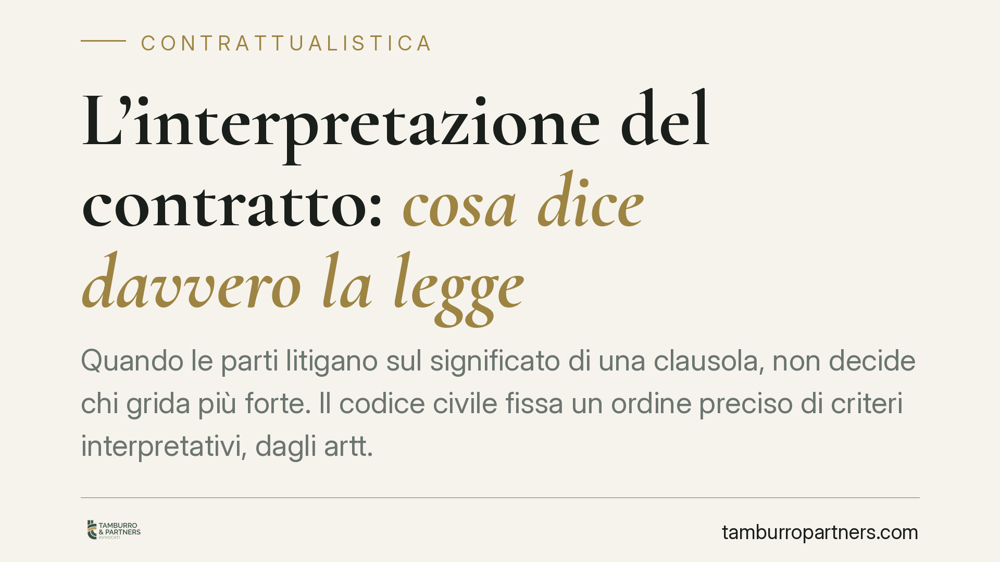

L'interpretazione del contratto: cosa dice davvero la legge
Quando le parti litigano sul significato di una clausola, non decide chi grida più forte. Il codice civile fissa un ordine preciso di criteri interpretativi, dagli artt. 1362 a 1371, che il giudice deve seguire. Conoscerli aiuta a scrivere contratti più chiari e a prevedere l'esito di una controversia. Ecco cosa prevede la legge e perché conta per chi firma.

Il problema: le parole non bastano
Un contratto sembra chiaro finché tutto va bene. I dubbi arrivano quando una parte legge una clausola in un modo e l'altra nel modo opposto. A quel punto la domanda diventa: chi decide cosa significa davvero quel testo?
La risposta non è arbitraria. La legge impone al giudice un percorso ordinato, con regole precise contenute negli articoli 1362-1371 del codice civile. Non sono suggerimenti: sono criteri vincolanti, che si applicano in sequenza.
Inquadramento normativo
Il punto di partenza è l'art. 1362 c.c.: nell'interpretare il contratto occorre indagare quale sia stata la comune intenzione delle parti, senza limitarsi al senso letterale delle parole. È il principio cardine: conta ciò che i contraenti hanno realmente voluto, non solo ciò che hanno scritto. La stessa norma consente di valutare anche il comportamento tenuto dopo la firma, che spesso rivela come le parti abbiano inteso l'accordo.
Seguono i cosiddetti criteri di interpretazione soggettiva (artt. 1363-1365). Le clausole si interpretano le une per mezzo delle altre (art. 1363): il contratto è un insieme coerente, non una somma di frasi isolate. E si applica il principio di buona fede (art. 1366), che impone di leggere il testo secondo correttezza e lealtà, escludendo interpretazioni cavillose.
Solo se questi criteri non risolvono il dubbio si passa alle regole di interpretazione oggettiva (artt. 1367-1371). Tra le più rilevanti: l'art. 1367 impone di preferire l'interpretazione che dà effetto alla clausola rispetto a quella che la renderebbe inutile; l'art. 1370 prevede che le clausole inserite nei moduli o formulari predisposti da una parte, in caso di dubbio, si interpretino a favore dell'altra (regola di garanzia per chi aderisce a condizioni standard); l'art. 1371 chiude il sistema stabilendo che, in caso di dubbio residuo, il contratto oneroso va inteso nel senso che realizza l'equo contemperamento degli interessi.
Un richiamo utile: l'art. 1324 c.c. estende queste regole, in quanto compatibili, agli atti unilaterali tra vivi a contenuto patrimoniale. La Cassazione, con orientamento costante, ribadisce che i criteri legali vanno applicati nel loro ordine gerarchico e che l'interpretazione del contratto è un giudizio di fatto, sindacabile in sede di legittimità solo per violazione dei canoni ermeneutici o per motivazione carente.
Implicazioni pratiche
Per chi firma un contratto, tutto questo ha conseguenze concrete.
Prima: il testo scritto è importante, ma non è l'unico elemento. Trattative, scambi di email e comportamenti successivi possono cambiare il significato di una clausola. Ciò che si scrive prima e dopo la firma può essere usato in giudizio.
Seconda: chi predispone il contratto ha un onere in più. Se il modulo è ambiguo, in caso di dubbio la clausola verrà letta a sfavore di chi l'ha redatta. Un vantaggio apparente in fase di scrittura può ritorcersi contro in fase di lite.
Terza: la buona fede non è una formula retorica. Un'interpretazione tecnicamente possibile ma sleale rispetto allo scopo dell'accordo difficilmente reggerà davanti al giudice.
Cosa fare in concreto
- Definite i termini chiave all'inizio del contratto: indicate espressamente cosa intendete con le parole ambigue ("consegna", "accettazione", "grave inadempimento").
- Conservate la corrispondenza precontrattuale e successiva alla firma: email, verbali, comunicazioni. Documentano la comune intenzione.
- Curate la coerenza interna: verificate che le clausole non si contraddicano, perché verranno lette le une con le altre.
- Prestate attenzione ai moduli standard: se aderite a condizioni predisposte da altri, segnalate per iscritto ogni punto ambiguo prima di firmare.
- Fatevi assistere in fase di redazione, non solo quando la lite è già iniziata. Consigliamo di intervenire sul testo prima della firma: è lì che si prevengono la maggior parte delle controversie interpretative.
Interpretare un contratto non è un esercizio libero. È un percorso guidato dalla legge, che premia chi scrive con chiarezza e documenta le proprie intenzioni.
---
*Contributo informativo a cura di Tamburro & Partners - Avv. Giuseppe Tamburro. Non costituisce parere legale.*
Ogni contratto ha il suo equilibrio.
Se vuoi una revisione delle clausole o una redazione su misura, scrivi allo studio. Ti rispondiamo entro un giorno lavorativo.